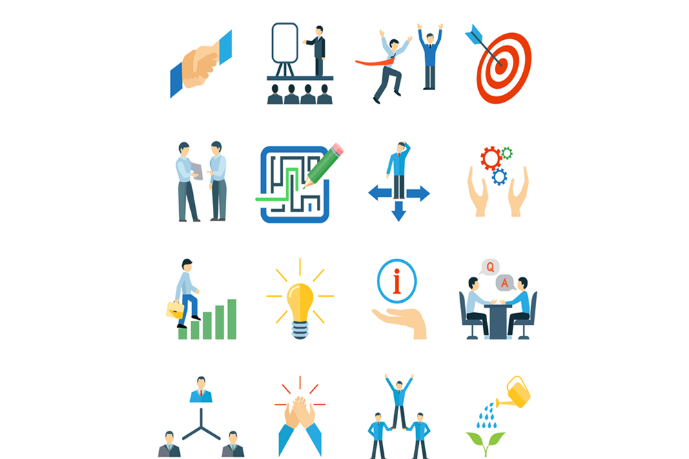

Nov 16, 2019

Logistics being one of the most efficient and profitable business holds today, every nook and corner of the planet. This has led to an exponential growth in the economy of global logistics. But this business, with all its pros, also demands time, work and commitment to yourself as well as your consumers. It feels great to see that World Bank’s Logistics Performance Index states India 35’Th out of 160 countries in Logistics. For a very long time, Indian logistics remained totally unorganised. But with changing times and global factors, India has secured 35’Th position.
According to Logistics Performance Index (LPI), there are six essential skills every logistics company must possess for a successful logistics business, which can help a small start-up bloom with exponential growth.
The components analysed in the International LPI were chosen based on recent theoretical and empirical research and on the practical experience of logistics professionals involved in international freight forwarding. They are:
1. Arrangements of shipments and customs- The efficiency of customs and border management clearance.
2. Time- The frequency with which shipments reach consignees within scheduled or expected delivery times.
3. Competitive monetary Worth- The ease of arranging competitively priced shipments.
4. Infrastructure- The quality of trade and transport infrastructure.
5. Quality of logistics services- The competence and quality of logistics services- trucking, forwarding, and customs brokerage.
6. Traceability- The ability to track and trace consignments.
Many logistics company use this code, including Askmetrip.com to become an exponentially growing and extra-ordinary group.
written by :